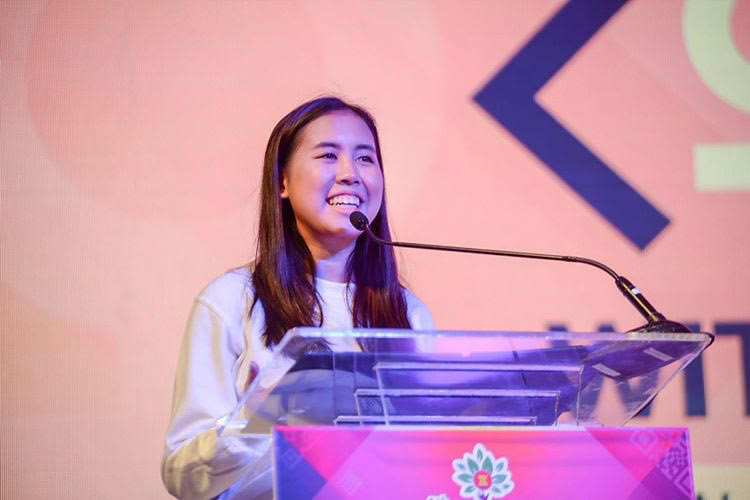

AUDREY PE
Founder of WiTech
What motivated you to start WiTech?
The story really starts in middle school when my computer science teacher decided to go off of the basic “how to use Microsoft Word and Excel” curriculum and teach us block coding instead. It was really interesting, so I went on Code Academy and watched lectures on YouTube to learn more and eventually told my teachers in high school that I wanted to go into tech. Unfortunately, there was a lot of pushback with students saying that I would be the only girl and even a teacher saying that she couldn’t imagine me succeeding in STEM. That’s when I realized that they couldn’t see me being successful because there were very few women in tech much less women of color. I did some research and found out about the gender gap and statistics like only 18% of startups in the Philippines are founded by women. I started messaging women on LinkedIn and Twitter who were in AI, data science, etc. and asking them questions about their careers in the tech industry and posting about them on the WiTech blog.

How did you grow WiTech from a blog to an international non-profit organization in just a few years?
It is very crazy having 70+ members in three countries (Philippines, US, and UK) We were able to do that through social media. We posted applications on Instagram, Twitter, and Facebook and the next thing you know, complete strangers who also cared about gender equality would apply. We also partnered with Accenture for our first women in tech conference and they definitely helped spread the word.
You have spoken at the UN, Tedx, and have been featured in Esquire Magazine. How was that experience especially as a high school student?
I actually attended one of the biggest tech conferences in the Philippines called TechTonic as press representing WiTech. At the main tech panel, I gave an elevator pitch about WiTech and asked the panelists what they were doing to diversify the tech industry. They basically bypassed my question, only saying things like “it’s so great that young people are working towards this” etc. which really frustrated me. Luckily though, a representative from the Phillipine government heard about my WiTech initiative and invited me to speak at the ASEAN (Association of Southeast Asian Nations) Youth Entrepreneurship event and the speaking opportunities really snowballed from there.
What is the tech scene like in the Philippines?
It’s very common in the Philippines to not have computer science integrated in the curriculum. In fact, many students don’t know what startups and programming is in provincial areas. You can really see the effects of this in the tech industry where everyone knows about tech giants like Microsoft and Amazon but when we go to rural areas to teach our workshops, many people don’t know about these companies beyond Facebook and Instagram. In general, there is a stark contrast between the super saturated tech scene in the cities like metro Manilla and the lack of access to technology in the rural areas. For example, 51 million Fillipinos don’t have access to WiFi.
What do you plan to do in the future?
I honestly don’t know specifically but I do know that I want to work in the intersection of technology and education and use them to empower people. I feel very lucky that I had the opportunity to transfer from a local school to an international school where I got my first taste of a formal computer science curriculum and met teachers who supported my aspirations in tech. I definitely see the role of education in getting more people involved in the tech industry.
What advice would you give to young girls pursuing a career in STEM?
I would say look for role models and mentors to support you. Especially in an industry that kind of tells you that you need to look a certain way to fit in, having people who are like you to talk to is really important. Remember that by entering male dominated industries that not only are you empowering yourself but also other girls to dismantle gender norms and stereotypes.